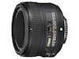
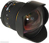
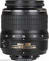
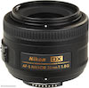
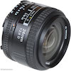
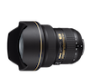
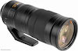
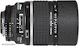

Kai's Lens Listings
Visit us regularly for the latest in consumer lens reviews, price updates, reviews, and tips!
| Name | Price | Comment | Photo | Sample |
|---|---|---|---|---|
|
Nikon 50mm f/1.8G Prime
|
$200 | Called the "nifty fifty" for a reason. One of the best lenses out there for portrait photography. |  | |
|
Rokinon 14mm f/2.8 Prime
|
$300 | One of the best manual-focus wide-angle prime lenses out there. Awesome for astrophotgraphy and landscape photography. |  | |
|
Nikon 18-55mm f/3.5-5.6
|
$120 | Standard kit lens that comes with most new Nikons. Great for pretty much everything - and a solid investment if you're still trying to figure out what type of photography you like best. |  | |
|
Nikon 35mm f/1.8G Prime
|
$200 | This lens, which has a slightly wider aperture and shorter focal length than the 50mm prime, is excellent for slightly wider FOV shots. |  | |
|
Nikon 24mm f/2.8G Prime
|
$400 | A top lens for anybody interested in mid-range professional portrait photography. Also excellent for video work, depending on subject distances. Give it a shot if you have some cash to spare. |  | |
|
Nikon 14-24mm f/2.8G
|
$1900 | My favorite overall lens. If you can pick one up and have the cash to spare, please do yourself a favor and get one. The low f-stop contributes to incredibly crisp shots, and the zoom capabilities are fantastic. It's an incredibly flexible lens, and will last the whole life of your camera. |  | |
|
Nikon 200-500mm f/5.6E
|
$1400 | Probably the best lens for long-distance photography. Whether you're shooting birds, giraffes, lions, pool sports, or other distant events, this lens constantly rewards with ultra-crisp, low-distortion shots, even at high ISO values. It's not super fast, so you won't get a lot of bokeh, but it's the best lens past the 300mm mark. |  | |
|
Nikon 135mm f/2D Prime
|
$1400 | The best lens out there for mid-range portrait work. Excellent for those shoots where you don't want to get too close to your subject, but still want super-crisp close-up face shots (weddings!). |  |